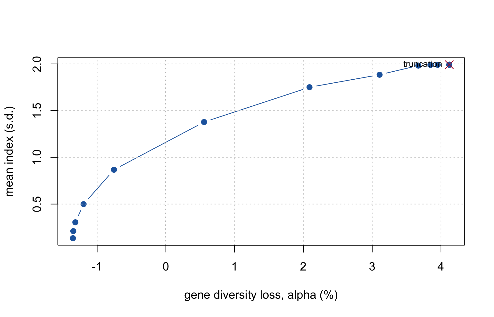
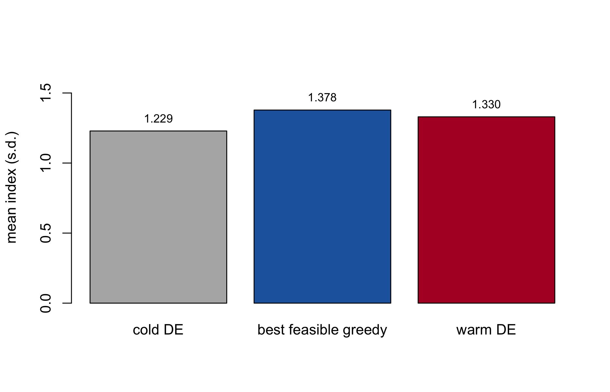
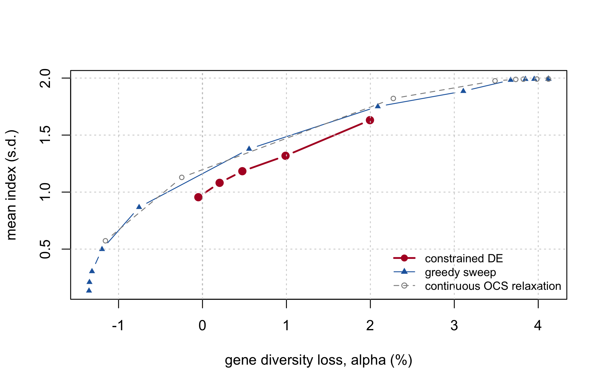

c(candidates_N = ctx$N,
lines_A = sum(ctx$pool == "A"),
lines_B = sum(ctx$pool == "B"),
markers_m = ctx$m,
hybrids_kept = n_sel,
uses_per_line = 2 * n_sel / ctx$n_lines,
gd_ref = null$gd_ref,
gd_ref_sd = null$gd_sd,
alpha_ceiling_pct = 100 * alpha_loss(sel_truncation(ctx, n_sel), ctx, null$gd_ref))
#> candidates_N lines_A lines_B markers_m
#> 6.250000e+02 2.500000e+01 2.500000e+01 2.000000e+03
#> hybrids_kept uses_per_line gd_ref gd_ref_sd
#> 6.000000e+01 2.400000e+00 3.258386e-01 7.654486e-04
#> alpha_ceiling_pct
#> 4.121618e+0016 Combinatorial selection
The problem is: choose \(n\) of \(N\) hybrids, maximising mean index subject to a diversity budget. This chapter builds up the strategies that solve it, from the two that need no optimiser at all to the differential evolution that beats them – and explains why the DE only beats them under one specific condition.
The decision is a concrete one, and it is the last of a cycle in a cross-pollinated crop. Two heterotic pools, A and B, hold \(L_A\) and \(L_B\) inbred (or doubled-haploid) lines. Every candidate is one cross \(A_a \times B_b\), so the candidate set is the factorial \(N = L_A \times L_B\) – in maize, the set of single crosses that could be made from the current elite lines without introducing anything new. The \(n\) you keep are the crosses that go forward: into multi-location testing, into seed increase, and – through their parents – into the next recycling cycle. Keeping too few distinct parents is not a statistical inconvenience, it is a decision to narrow the pool that the programme will breed from next.
What has to be in hand before any line of this chapter runs is the three-object contract of Chapter 13:
X, the \(N \times m\) hybrid marker matrix, coded \(\{0, 0.5, 1\}\) as the average of the two homozygous parents;f, the \(N \times N\) molecular coancestry of Caballero and Toro (2002), values in \([0, 1]\), built fromXand never from a centred genomic relationship matrix (Section 1.2);hybrids, carrying each cross’s parents and its predicted traits, from whichbuild_ctx()forms the single indexctx$index, standardised to unit variance over the candidate pool (Chapter 14).
Assumptions, declared once and not violated afterwards. Parent lines are homozygous, so a hybrid’s genotype is the mean of its parents and X takes only the three values above. Markers are treated as neutral. The index is frozen before selection: nothing is re-predicted inside the optimiser, which matters because the index carries error that is correlated with relatedness (Chapter 12, finding 5). The allele-frequency base ctx$p0 is the candidate pool and is set once in build_ctx(). Diversity loss \(\alpha\) is always measured against a random subset of the same size n_sel (Section 11.9), never against the whole pool. Dominance appears nowhere in the objective: it is already inside the predicted hybrid performance, and the between-pool divergence that generates heterosis is a quantity to preserve, not to minimise (Chapter 10).
The instance this chapter runs on:
Read it as a breeder would. 60 crosses are kept out of 625, which is 9.6% of the factorial. The 60 crosses consume \(2n =\) 120 parent slots spread over 50 lines, so a perfectly even plan would use each line 2.4 times – the scale against which any per-line cap has to be set. gd_ref is the gene diversity of a random subset of exactly this size, with its resampling standard deviation next to it, and the last row is the attainable ceiling: pure truncation loses 4.12% of it. Any \(\alpha_{\max}\) above that ceiling constrains nothing at all, which is the first thing to check and the subject of Chapter 15.
16.1 Four baselines before any optimiser
Four families – random, truncation, truncation under a per-line cap, and greedy – in six rows, because greedy is shown at three merit weights.
sels <- list(
random = sel_random(ctx, n_sel),
truncation = sel_truncation(ctx, n_sel),
trunc_cap = sel_truncation_cap(ctx, n_sel),
greedy_div = sel_greedy(ctx, n_sel, w = 0),
greedy_w1 = sel_greedy(ctx, n_sel, w = 1),
greedy_w3 = sel_greedy(ctx, n_sel, w = 3)
)
fmt(t(sapply(sels, function(s) c(
index = mean_index(s, ctx),
alpha_pct = 100 * alpha_loss(s, ctx, null$gd_ref),
Ns = status_number(s, ctx),
Ne_parents = ne_parents(s, ctx),
max_line = max_line_use(s, ctx)))), 3)| index | alpha_pct | Ns | Ne_parents | max_line | |
|---|---|---|---|---|---|
| random | 0.008 | -0.236 | 0.743 | 37.696 | 7 |
| truncation | 1.992 | 4.122 | 0.727 | 13.020 | 23 |
| trunc_cap | 0.820 | 0.326 | 0.740 | 31.034 | 4 |
| greedy_div | 0.134 | -1.352 | 0.747 | 37.306 | 5 |
| greedy_w1 | 1.992 | 4.122 | 0.727 | 13.020 | 23 |
| greedy_w3 | 1.992 | 4.122 | 0.727 | 13.020 | 23 |
c(w1_is_truncation = setequal(sels[["greedy_w1"]], sels[["truncation"]]),
w3_is_truncation = setequal(sels[["greedy_w3"]], sels[["truncation"]]))
#> w1_is_truncation w3_is_truncation
#> TRUE TRUEThree of those six rows are the same plan. greedy_w1 and greedy_w3 return exactly the truncation set – same index, same \(\alpha\), same max_line – because both weights sit far above the crossover measured in the w-units chunk below, where the merit term swamps the coancestry term and the greedy argmax degenerates to the index ranking. Read them as one row until that measurement has been made; it is the reason a \(w\) grid of round numbers is a trap.
Read the columns in this order, because each answers a different question and three of them are routinely skipped:
index, in standard deviations of the candidate pool – what the plan is worth.alpha_pct, the loss of gene diversity relative to a random subset of the same size – what it costs, on the lens the constraint will pin. Negative means more diverse than random.Ns, the status number \(1/(2\theta)\) (Section 11.3) – the same information as \(\alpha\) on an absolute scale, kept because it is what the animal literature quotes.Ne_parents, the effective number of parent lines, which is computed from counts alone and is the metric that catches “\(\theta\) looks fine but twelve lines did all the work”.max_line, the largest number of selected crosses sharing one parent – the operational number, because that line is a seed parent and has to be increased, maintained and, in a CMS system, converted.
Truncation is the ceiling on gain and the floor on diversity. It is what every programme does by default, and the interesting question is not whether it loses diversity but how little index a constrained plan has to give up relative to it. Its max_line here is 23: one line parents that many of the 60 selected crosses, against 2.4 under even use. That is the concentration a cap is meant to remove, and it is visible without any coancestry matrix.
Truncation with a per-line cap is the cheap baseline that deserves more attention than it gets. It needs no coancestry matrix at all – only counting:
sel_truncation_cap
#> function (ctx, n_sel, cap = ceiling(2 * n_sel/ctx$n_lines) +
#> 1)
#> {
#> ord <- order(ctx$index, decreasing = TRUE)
#> used <- integer(ctx$n_lines)
#> out <- integer(0)
#> for (i in ord) {
#> a <- ctx$ped$a[i]
#> b <- ctx$ped$b[i]
#> if (used[a] < cap && used[b] < cap) {
#> out <- c(out, i)
#> used[a] <- used[a] + 1L
#> used[b] <- used[b] + 1L
#> if (length(out) == n_sel)
#> break
#> }
#> }
#> out
#> }
#> <bytecode: 0xacb8922e0>
#> <environment: namespace:hybdiv>The procedure, stated as a breeder would run it:
- Rank all 625 candidate crosses by index, best first.
- Walk down the ranking. Admit a cross only if both its parents are still below the cap.
- Stop when
n_selcrosses have been admitted, or when the ranking is exhausted – in which case the returned vector is shorter thann_seland the cap was infeasible for this set size. - Feasibility is arithmetic, not luck: with \(L_A\) lines in pool A a cap of \(c\) admits at most \(L_A c\) crosses, so the condition is \(n \le \min(L_A, L_B)\,c\) – here 60 against
c(index_truncation = mean_index(sels$truncation, ctx),
index_capped = mean_index(sels$trunc_cap, ctx),
index_retained_pct = 100 * mean_index(sels$trunc_cap, ctx) /
mean_index(sels$truncation, ctx),
Ne_par_truncation = ne_parents(sels$truncation, ctx),
Ne_par_capped = ne_parents(sels$trunc_cap, ctx))
#> index_truncation index_capped index_retained_pct Ne_par_truncation
#> 1.9919371 0.8203555 41.1838050 13.0198915
#> Ne_par_capped
#> 31.0344828cap <- ceiling(2 * n_sel / ctx$n_lines) + 1 # the function's default
ord <- order(ctx$index, decreasing = TRUE)
lines_used <- function(s) sum(tabulate(c(ctx$ped$a[s], ctx$ped$b[s]),
ctx$n_lines) > 0)
c(cap = cap,
reached_n_sel = length(sels[["trunc_cap"]]) == n_sel,
candidates_scanned = max(match(sels[["trunc_cap"]], ord)),
shared_with_truncation = length(intersect(sels[["truncation"]],
sels[["trunc_cap"]])),
lines_used_truncation = lines_used(sels[["truncation"]]),
lines_used_capped = lines_used(sels[["trunc_cap"]]))
#> cap reached_n_sel candidates_scanned
#> 4 1 413
#> shared_with_truncation lines_used_truncation lines_used_capped
#> 16 33 32The default cap is ceiling(2 * n_sel / ctx$n_lines) + 1, one above even use, which is 4 here. Filling 60 slots under it required scanning 413 of the 625 ranked candidates, and only 16 of the resulting crosses are also in the truncation set: the cap does not trim the top of the ranking, it reshuffles most of it. The last two rows count the same reshuffling in lines rather than in crosses, and they are the reason \(N_{e,\text{par}}\) is not a line count: the capped plan touches 32 distinct parent lines against truncation’s 33, out of 50 available – to within one line, the same set size – while its effective number of parents is 31 against 13. What the cap changes is how evenly the 120 parent slots are spread over the lines that are used, not how many lines are used at all.
What that buys and what it costs, separately. The cap cuts the diversity loss from 4.12% to 0.33% and raises the effective number of parents from 13 to 31, at 41% of truncation’s index. Whether that is a good trade is a programme decision, not a statistical one – but note that the capped plan is feasible at a 1% budget while truncation is not, and it was found by counting alone.
Before reaching for an optimiser, run this. If a per-line cap already meets your constraint at an acceptable index, you are done. The failure mode at this step is silent: a returned vector shorter than n_sel, which every downstream metric will happily evaluate on the wrong set size – length() it.
16.2 Greedy, with incremental updates
Adding hybrid \(j\) to an existing set changes the submatrix total by \(2 s_j + f_{jj}\), where \(s_j\) is the sum of \(f_{ij}\) over the already-chosen. That makes each step \(O(N)\) instead of \(O(n^2)\), and the whole construction affordable.
S <- sel_greedy(ctx, n_sel = 10, w = 1)
j <- setdiff(seq_len(ctx$N), S)[1]
f <- ctx[["f"]]
recomputed <- sum(f[c(S, j), c(S, j)]) # O(n^2), from scratch
incremental <- sum(f[S, S]) + 2 * sum(f[S, j]) + f[j, j] # O(n), the update
stopifnot(isTRUE(all.equal(recomputed, incremental)))
c(recomputed = recomputed, incremental = incremental)
#> recomputed incremental
#> 87.07925 87.07925sel_greedy
#> function (ctx, n_sel, w = 0, max_use = NULL)
#> {
#> f <- ctx[["f"]]
#> d <- diag(f)
#> s <- numeric(ctx$N)
#> avail <- rep(TRUE, ctx$N)
#> out <- integer(n_sel)
#> total <- 0
#> if (!is.null(max_use)) {
#> pa <- as.integer(ctx$ped$a)
#> pb <- as.integer(ctx$ped$b)
#> cnt <- integer(ctx$n_lines)
#> }
#> for (k in seq_len(n_sel)) {
#> theta_new <- (total + 2 * s + d)/k^2
#> score <- w * ctx$index - theta_new
#> score[!avail] <- -Inf
#> j <- which.max(score)
#> if (!is.finite(score[j])) {
#> out <- out[seq_len(k - 1L)]
#> break
#> }
#> out[k] <- j
#> avail[j] <- FALSE
#> total <- total + 2 * s[j] + d[j]
#> s <- s + f[, j]
#> if (!is.null(max_use)) {
#> for (a in c(pa[j], pb[j])) {
#> cnt[a] <- cnt[a] + 1L
#> if (cnt[a] >= max_use)
#> avail[pa == a | pb == a] <- FALSE
#> }
#> }
#> }
#> out
#> }
#> <bytecode: 0xacafafcb0>
#> <environment: namespace:hybdiv>One step \(k\), in the order the code performs it:
theta_new <- (total + 2 * s + d) / k^2is the group coancestry the set would have, for every candidate at once, withtotalthe current submatrix sum,sthe running vector of coancestry sums against the chosen set andd = diag(f). The normaliser is \(k^2\), the size after the addition.score <- w * ctx$index - theta_new– merit against relatedness.- Candidates already chosen are set to
-Inf; withmax_useset, so is every hybrid of a line that has reached its cap. The cap is therefore a feasibility test on the move, never a penalty on the result – the partition-matroid treatment of Chapter 17. - The argmax is taken,
totalandsare updated in \(O(N)\), and the parent counts incremented. - If no finite score remains, the loop exits early and the returned vector is short – the same check as for the capped truncation.
The score is \(w \cdot \text{index} - \theta\). At \(w = 0\) this is pure diversity – the ceiling on diversity and near-zero gain. As \(w \to \infty\) it converges to truncation. Sweeping \(w\) traces a frontier – but only if the grid is in the right units, and that is the trap at this step.
\(w\) is an exchange rate: index standard deviations per unit of group coancestry. The two quantities it converts between differ by four orders of magnitude, and that ratio is measurable before any sweep is run:
S30 <- sel_greedy(ctx, 30, w = 0)
theta_if_added <- (sum(f[S30, S30]) + 2 * colSums(f[S30, ]) + diag(f)) / 31^2
c(index_spread = diff(range(ctx$index)),
theta_spread = diff(range(theta_if_added)),
w_crossover = diff(range(theta_if_added)) / diff(range(ctx$index)))
#> index_spread theta_spread w_crossover
#> 6.055856e+00 3.293444e-04 5.438446e-05w_crossover is the weight at which the two terms of the score have equal range. Below it the sweep returns the diversity solution; a decade or two above it, every point collapses onto truncation. A grid of \(w \in \{0.25, 0.5, \dots, 30\}\) – the obvious one, and the one this chapter used before it was measured – sits entirely above the transition and returns the same selection at every point, which makes greedy look an order of magnitude worse than it is. The grid below spans six decades around the crossover and is the one book/scripts/regenerate.R uses for the benchmark of Chapter 17, so the two chapters report the same greedy.
ws <- c(0, 10^seq(-5, 1, length.out = 19))
gf <- do.call(rbind, lapply(ws, function(w) {
s <- sel_greedy(ctx, n_sel, w = w)
data.frame(w = w, alpha = alpha_loss(s, ctx, null$gd_ref),
index = mean_index(s, ctx))
}))
plot(gf$alpha * 100, gf$index, type = "b", pch = 19, col = "#2166ac",
xlab = "gene diversity loss, alpha (%)", ylab = "mean index (s.d.)")
points(alpha_loss(sels$truncation, ctx, null$gd_ref) * 100,
mean_index(sels$truncation, ctx), pch = 4, cex = 1.5, col = "#b2182b")
text(alpha_loss(sels$truncation, ctx, null$gd_ref) * 100,
mean_index(sels$truncation, ctx), "truncation", pos = 2, cex = 0.75)
abline(v = 0, lty = 3); grid()
fmt(gf[gf$w <= 0.01, ], 5)| w | alpha | index |
|---|---|---|
| 0.00000 | -0.01352 | 0.13431 |
| 0.00001 | -0.01347 | 0.20982 |
| 0.00002 | -0.01317 | 0.30454 |
| 0.00005 | -0.01197 | 0.49867 |
| 0.00010 | -0.00755 | 0.86717 |
| 0.00022 | 0.00555 | 1.37820 |
| 0.00046 | 0.02089 | 1.75058 |
| 0.00100 | 0.03107 | 1.88486 |
| 0.00215 | 0.03672 | 1.98253 |
| 0.00464 | 0.03848 | 1.99043 |
| 0.01000 | 0.03952 | 1.99123 |
step <- which.max(gf$alpha > 0) # first grid point that loses diversity
jump <- gf[c(step - 1L, step), ]
fmt(jump, 5)| w | alpha | index | |
|---|---|---|---|
| 5 | 0.00010 | -0.00755 | 0.86717 |
| 6 | 0.00022 | 0.00555 | 1.37820 |
# The upper edge of the useful window: the smallest w whose plan is already the
# truncation plan, above which every row of the sweep is a duplicate.
flat_from <- min(gf$w[gf$index >= max(gf$index) - 1e-12])
c(flat_from = flat_from, rows_above = sum(gf$w > flat_from))
#> flat_from rows_above
#> 0.02154435 8.00000000Two readings, and the second is the argument for everything that follows. First, the whole frontier lives in the three decades between \(w = 10^{-5}\) – where the sweep is still moving, 0.13 at \(w = 0\) against 0.21 at the first non-zero grid point – and \(w \approx 10^{-2}\), by which the plan is within 0.04% of truncation’s index. From \(w =\) 0.0215 upward every one of the remaining 8 rows is the identical selection, and a sweep whose rows are all the same selection is a sweep in the wrong units, not a flat frontier. Second, the sweep is parameterised by \(w\) and the breeder’s constraint is not. Between the two adjacent grid points printed above, \(\alpha\) jumps from -0.76% to 0.56% and the index from 0.87 to 1.38; a budget falling inside that interval cannot be requested of a greedy sweep at all, only stumbled upon. An optimiser parameterised by \(\alpha_{\max}\) can be asked for it directly.
Greedy solutions are also what warm-start the differential evolution. That is not an optimisation detail – it is the difference between the DE working and not working.
16.3 The encoding problem
An \(N\)-dimensional 0/1 encoding is infeasible for differential evolution at this scale: at production size that is 5041 binary dimensions. Instead, encode \(n_{sel}\) continuous values in \([1, N]\) and decode them to unique indices.
decode
#> function (par, N, n_sel)
#> {
#> k <- as.integer(par)
#> k[k < 1L] <- 1L
#> k[k > N] <- N
#> dup <- duplicated(k)
#> if (any(dup))
#> k[dup] <- setdiff(seq_len(N), k[!dup])[seq_len(sum(dup))]
#> k
#> }
#> <bytecode: 0xacf74a938>
#> <environment: namespace:hybdiv>The decode, step by step:
as.integer(par)truncates each coordinate toward zero, so the real interval \([i, i+1)\) maps to candidate \(i\).sel_de()searches the box \([1,\, N + 0.999]\), so candidates \(1\) to \(N-1\) each own a full unit interval and candidate \(N\) owns \([N,\, N + 0.999]\) – narrower by one part in a thousand, because the upper bound stops just short of \(N + 1\) instead of reaching it.- Coordinates outside the box are clamped to the ends.
duplicated()marks every coordinate after the first that lands on an already-used candidate.- Each duplicate is replaced by the lowest index not otherwise in use, so the result always has exactly
n_seldistinct candidates.
A worked case, small enough to check by hand:
d <- decode(c(3.9, 3.2, 1.1, 7.5), N = 10, n_sel = 4)
stopifnot(all(d == c(3, 2, 1, 7)))
d
#> [1] 3 2 1 7Truncation gives \((3, 3, 1, 7)\); the second coordinate is the duplicate; the lowest index not in \(\{3, 1, 7\}\) is 2; the repair returns \((3, 2, 1, 7)\). The same mechanism is what lets a warm start be injected exactly: a seed is written into the population as index + 0.5, the middle of its own interval, and decodes back to itself.
s0 <- sel_greedy(ctx, n_sel, w = 1)
c(box_lower = 1,
box_upper = ctx$N + 0.999,
width_typical = 2 - 1, # candidate 1 owns [1, 2)
width_last = (ctx$N + 0.999) - ctx$N, # candidate N owns [N, N+0.999]
seed_roundtrip = all(decode(s0 + 0.5, ctx$N, n_sel) == s0))
#> box_lower box_upper width_typical width_last seed_roundtrip
#> 1.000 625.999 1.000 0.999 1.000Duplicates are repaired deterministically. A stochastic repair would make the fitness noisy, and a noisy fitness stops DE converging – the same parameter vector must always score the same.
set.seed(3)
p1 <- runif(n_sel, 1, ctx$N + 1)
p2 <- runif(n_sel, 1, ctx$N + 1)
d1 <- decode(p1, ctx$N, n_sel)
d2 <- decode(p2, ctx$N, n_sel)
c(unique_1 = length(unique(d1)), unique_2 = length(unique(d2)),
in_range = all(c(d1, d2) >= 1 & c(d1, d2) <= ctx$N),
collisions_repaired = sum(duplicated(as.integer(p1))),
deterministic = identical(d1, decode(p1, ctx$N, n_sel)))
#> unique_1 unique_2 in_range collisions_repaired
#> 60 60 1 2
#> deterministic
#> 1
NoteA known bias in the repair
The repair fills in the lowest free indices, which introduces a slight bias toward low-numbered candidates. It is marked in the source with a ponytail: comment naming the ceiling and the upgrade path – switch to “nearest free” if the DE ever stalls. It has not mattered at these scales, but it is the kind of thing that should be written down rather than discovered later.
16.3.1 A third encoding: one weight per line
Section 12.1 showed that \(\theta\) depends only on the line-usage vector. That makes a third encoding available, and one that changes what the coordinates mean: one weight per line, dimension \(L\). Against the \(N\)-dimensional key vector that is a collapse from 3600 coordinates to 120 in the run below. Against the \(n_{sel}\) coordinates sel_de() actually searches it is close to a wash, and the numbers below say which of those two comparisons is which.
decode_lines
#> function (p, ctx, n_sel, max_use = NULL, w_div = 3)
#> {
#> par <- ctx$parents
#> sc <- ctx$index + w_div * (p[par[, 1]] + p[par[, 2]])
#> ord <- order(-sc)
#> if (is.null(max_use))
#> return(ord[seq_len(n_sel)])
#> sel <- integer(n_sel)
#> cnt <- integer(ctx$n_lines)
#> k <- 0L
#> for (h in ord) {
#> a <- par[h, 1]
#> b <- par[h, 2]
#> if (cnt[a] < max_use && cnt[b] < max_use) {
#> k <- k + 1L
#> sel[k] <- h
#> cnt[a] <- cnt[a] + 1L
#> cnt[b] <- cnt[b] + 1L
#> if (k == n_sel)
#> break
#> }
#> }
#> if (k < n_sel) {
#> rest <- setdiff(ord, sel[seq_len(k)])
#> sel[(k + 1L):n_sel] <- rest[seq_len(n_sel - k)]
#> }
#> sel
#> }
#> <bytecode: 0xad0374f90>
#> <environment: namespace:hybdiv>The line weight shifts each hybrid’s score by the weights of its two parents, and hybrids are taken greedily subject to the per-line usage cap – so the cap is satisfied by construction rather than by penalty. In detail:
- Each candidate scores
ctx$index + w_div * (p[a] + p[b]), withpthe line-weight vector being searched andw_div = 3by default. A line’s weight therefore moves every cross it parents, which is what makes the decision a line decision. - Candidates are taken in decreasing score, skipping any whose parents have reached
max_use. - If the cap makes
n_selunreachable, the selection is topped up ignoring it, and the fitness function’s penalty term then sees the violation – so an infeasible cap degrades gracefully instead of returning a short vector.
At p = 0 the decoder is exactly capped truncation, which is the natural zero of the encoding; Chapter 17 verifies that identity numerically where the encoding is actually driven.
The claim this chapter opened with – that an \(N\)-dimensional encoding is infeasible for DE at this scale – is measured rather than asserted, and the measurement is cached in data/de_constraints.csv. It is worth being exact about what it compares, because neither arm of it is sel_de(). Both are driven through make_fitness_fast(), on a pool of \(N = 3600\) crosses from \(L = 120\) lines, under the four simultaneous restrictions of Chapter 12: diversity loss \(\le 0.5\%\), \(N_{e,\text{par}} \ge 50\), at most 6 uses per line, and heterotic-pool balance within 5%. One arm is decode_rank() – one random key per hybrid, dimension 3600, the \(N\)-dimensional encoding under indictment. The other is decode_lines(), dimension 120.
| encoding | dim | index | index_min | index_max | loss % | Ne parents | max uses | seconds |
|---|---|---|---|---|---|---|---|---|
| hybrid keys / penalty | 3600 | 0.351 | 0.343 | 0.358 | 0.060 | 76.634 | 5.667 | 6.550 |
| hybrid keys / repair | 3600 | 0.351 | 0.343 | 0.358 | 0.060 | 76.634 | 5.667 | 9.621 |
| line weights / repair | 120 | 1.988 | 1.956 | 2.017 | 0.448 | 50.084 | 6.000 | 12.126 |
#> hybrid_keys_mean hybrid_keys_range line_weights_mean line_weights_range
#> 0.351 0.014 1.988 0.061
#> ratio_of_means
#> 5.667At dimension 3600 the search reaches index 0.351, at dimension 120 it reaches 1.988, and the seed-to-seed range within each arm (0.014 and 0.061) is an order of magnitude smaller than the distance between them, so the ordering is not a seed effect. Penalty and repair constraint handlers returned numerically identical plans at dimension 3600, because at that dimension the search never travels far enough from its random start to reach the boundary where the two handlers differ.
Three things that result does not say, each of which it has been used to say:
- It is not a comparison against the encoding this chapter runs.
sel_de()searches \(n_{sel}\) coordinates, not \(N\); in the book’s own head-to-head benchmark (Chapter 17)sel_de()finishes ahead of the line-encodedsel_de_fast()at both scales – 1.36 against 1.059 at book scale, and 1.446 against 1.336 at production scale. The line encoding beats the N-dimensional encoding; it does not beat this one. - It is not a claim that one evaluation is cheaper. It is not, and Section 17.7 measures both.
- It is not a clean like-for-like. Four restrictions were active at once and the line decoder satisfies one of them – the per-line cap – by construction, so part of the margin is a penalty the other arm had to pay and the line arm did not.
The selected-set size of that cached run was not recorded alongside it, which is worth naming rather than papering over: the table is reproducible in direction, not to the digit.
The encoding decides whether the optimiser works. The constraint handler does not. Neither decides which of two viable encodings wins – that has to be measured, and Chapter 17 measures it.
16.4 Differential evolution
The run, as a procedure:
- Fix
n_selfirst, then obtaingd_reffromnull_distribution()at that same size. A reference computed at another size is a different quantity and every \(\alpha\) downstream is wrong by a fixed factor. - Choose \(\alpha_{\max}\) below the attainable ceiling printed at the top of this chapter, by the procedure of Chapter 15.
- Call
sel_de(). It builds its warm start, injects it into the initial population, and handsDEoptimthe fitness \(-(\bar u_S - 1000 \cdot \text{violation})\) to minimise. - Check the returned plan before using it: realised \(\alpha\) against the budget,
max_line, \(N_{e,\text{par}}\), and the gap to the bound. The diversity constraint is a penalty, so a returned plan is not guaranteed feasible – the violation is only made expensive.
sel_de
#> function (ctx, n_sel, alpha_max, gd_ref, NP = 300, itermax = 2000,
#> seeds = NULL, trace = FALSE, max_use = NULL)
#> {
#> fit <- make_fitness(ctx, n_sel, alpha_max, gd_ref, max_use = max_use)
#> if (is.null(seeds))
#> seeds <- lapply(c(0, 0.25, 0.5, 1, 2, 4, 8, 16), function(w) sel_greedy(ctx,
#> n_sel, w = w, max_use = max_use))
#> seeds <- Filter(function(s) length(s) == n_sel, seeds)
#> initial <- matrix(runif(NP * n_sel, 1, ctx$N + 1), NP, n_sel)
#> for (i in seq_len(min(length(seeds), NP))) initial[i, ] <- seeds[[i]] +
#> 0.5
#> ctrl <- DEoptim::DEoptim.control(NP = NP, itermax = itermax,
#> trace = trace, initialpop = initial)
#> res <- DEoptim::DEoptim(fit, lower = rep(1, n_sel), upper = rep(ctx$N +
#> 0.999, n_sel), control = ctrl)
#> decode(res$optim$bestmem, ctx$N, n_sel)
#> }
#> <bytecode: 0xac9c6b700>
#> <environment: namespace:hybdiv>alpha_max <- 0.01
set.seed(9)
de_idx <- suppressWarnings(
sel_de(ctx, n_sel, alpha_max = alpha_max, gd_ref = null$gd_ref,
NP = 120, itermax = 250))
fmt(c(index = mean_index(de_idx, ctx),
alpha_pct = 100 * alpha_loss(de_idx, ctx, null$gd_ref),
budget_pct = 100 * alpha_max,
Ns = status_number(de_idx, ctx),
Ne_parents = ne_parents(de_idx, ctx)), 3)
#> index alpha_pct budget_pct Ns Ne_parents
#> 1.330 0.978 1.000 0.738 22.857The realised loss sits just inside the budget, which is the sign that the constraint is active and the penalty correctly scaled: with penalty = 1000 multiplying the absolute violation, one tenth of a percentage point of excess loss costs a full index standard deviation. A plan that comes back well inside the budget at a low index usually means the opposite – that the penalty dominated and the search never approached the boundary.
16.4.1 The warm start is not optional
The strong form of this claim was measured at the package’s own simulation scale – 2500 candidates from 50 + 50 lines, \(n = 100\), \(4.5 \times 10^5\) evaluations, recorded as finding 7 of README.md – where a cold-started DE finishes below the greedy solutions it was supposed to improve on. That run is not reproduced here; this chapter runs 625 candidates and \(3 \times 10^4\) evaluations, and the conclusion at this scale is weaker. What follows is the same comparison, measured rather than asserted.
budget <- list(NP = 120, itermax = 250)
set.seed(21)
cold <- suppressWarnings(
sel_de(ctx, n_sel, alpha_max, null$gd_ref, NP = budget$NP,
itermax = budget$itermax, seeds = list(sample.int(ctx$N, n_sel))))
# `seeds = NULL`, the default, would have built the greedy sweep for us.
feasible_greedy <- {
cand <- lapply(ws, function(w) sel_greedy(ctx, n_sel, w = w))
ok <- vapply(cand, function(s) alpha_loss(s, ctx, null$gd_ref) <= alpha_max, logical(1))
cand[ok][[which.max(vapply(cand[ok], mean_index, numeric(1), ctx = ctx))]]
}
res <- c(`cold DE` = mean_index(cold, ctx),
`best feasible greedy` = mean_index(feasible_greedy, ctx),
`warm DE` = mean_index(de_idx, ctx))
bp <- barplot(res, col = c("grey70", "#2166ac", "#b2182b"), ylab = "mean index (s.d.)",
ylim = c(0, max(res) * 1.2))
text(bp, res, sprintf("%.3f", res), pos = 3, cex = 0.8)
fmt(res, 4)
#> cold DE best feasible greedy warm DE
#> 1.2289 1.3782 1.3299One run of each is not a comparison. Three seeds, with the cold and warm arms branched off the same seed so that the two differ only in the initial population:
reps <- do.call(rbind, lapply(c(9, 21, 33), function(sd_) {
set.seed(sd_)
warm <- suppressWarnings(
sel_de(ctx, n_sel, alpha_max, null$gd_ref, NP = 120, itermax = 250))
set.seed(sd_)
cold <- suppressWarnings(
sel_de(ctx, n_sel, alpha_max, null$gd_ref, NP = 120, itermax = 250,
seeds = list(sample.int(ctx$N, n_sel))))
data.frame(seed = sd_, warm = mean_index(warm, ctx),
cold = mean_index(cold, ctx))
}))
fmt(reps, 4)| seed | warm | cold |
|---|---|---|
| 9 | 1.3299 | 1.1589 |
| 21 | 1.3282 | 1.2289 |
| 33 | 1.3327 | 1.2016 |
fmt(c(warm_mean = mean(reps$warm), warm_sd = sd(reps$warm),
cold_mean = mean(reps$cold), cold_sd = sd(reps$cold)), 4)
#> warm_mean warm_sd cold_mean cold_sd
#> 1.3303 0.0023 1.1965 0.0353Result: over three seeds the warm start averages 1.33 with a standard deviation of 0.0023, the cold start 1.196 with 0.0353. Interpretation: the warm start is worth about 11% of mean index at equal evaluation budget, and rather more importantly it shrinks the run-to-run spread by an order of magnitude. A single cold run is not reportable: three cold runs span 0.07 index units against 0.004 for three warm ones – a spread that is 52% of the very difference being measured.
What the warm start actually contains at this scale is worth looking at, because it is weaker than the name suggests:
fit <- make_fitness(ctx, n_sel, alpha_max, null$gd_ref)
seed_w <- c(0, 0.25, 0.5, 1, 2, 4, 8, 16) # the grid sel_de() hard-codes
seeds <- lapply(seed_w, function(w) sel_greedy(ctx, n_sel, w = w))
fmt(data.frame(
w = seed_w,
index = vapply(seeds, mean_index, numeric(1), ctx = ctx),
alpha_pct = 100 * vapply(seeds, alpha_loss, numeric(1), ctx = ctx,
gd_ref = null$gd_ref),
fitness = vapply(seeds, function(s) fit(s + 0.5), numeric(1))), 4)| w | index | alpha_pct | fitness |
|---|---|---|---|
| 0.00 | 0.1343 | -1.3520 | -0.1343 |
| 0.25 | 1.9919 | 4.1216 | 29.2242 |
| 0.50 | 1.9919 | 4.1216 | 29.2242 |
| 1.00 | 1.9919 | 4.1216 | 29.2242 |
| 2.00 | 1.9919 | 4.1216 | 29.2242 |
| 4.00 | 1.9919 | 4.1216 | 29.2242 |
| 8.00 | 1.9919 | 4.1216 | 29.2242 |
| 16.00 | 1.9919 | 4.1216 | 29.2242 |
Seven of the eight seeds are the same selection – truncation – because the hard-coded grid lies entirely above the crossover measured earlier, and at a 1% budget all seven are infeasible, which the penalty converts into a fitness of about 29 on a scale where a random row scores near zero. The one feasible seed is the \(w = 0\) diversity solution at index 0.134. So at this scale the warm start installs one feasible plan and seven copies of an infeasible one, and is still worth the difference measured above. Widening that grid is a change to the package rather than to the call, and it is not made here: every number in this book was produced with sel_de() as it stands.
The mechanism is dimensional. At roughly 60 integer dimensions the search space is far too large for 30,000 evaluations to find anything a construction heuristic has not already found. The warm start does not help the DE converge faster – it gives the DE something worth improving on.
sel_de() builds the warm start automatically from a greedy sweep, and removing it will silently degrade every result in this book.
The limitation, stated where the result is: at book scale the warm-started DE (1.33) is still below the best feasible greedy solution of the finely swept grid (1.378) at this budget. The DE’s advantage here is not raw index but that it is parameterised by \(\alpha_{\max}\), so it can be asked for a budget the greedy grid does not happen to land on. The method that beats both on index, at a fraction of the wall-clock, is in Chapter 17.
16.4.2 Checking convergence against the bound
Section 15.2.1 gives a relaxation. Turning it into a bound takes one more step, derived in Section 17.4: the relaxation at a given \(\lambda\) maximises a penalised objective rather than the index, so the best relaxation point inside the budget is not an upper bound on the best plan inside the budget. The Lagrangian combination is.
relax <- ocs_relaxation(ctx, n_sel, lambdas = 10^seq(-1, 2.5, length.out = 10))
a_relax <- (null$gd_ref - relax[, "GD"]) / null$gd_ref
bound <- ocs_bound(ctx, n_sel, alpha_max, null$gd_ref)
c(DE_index = mean_index(de_idx, ctx),
upper_bound = as.numeric(bound),
gap_pct = 100 * (as.numeric(bound) - mean_index(de_idx, ctx)) / as.numeric(bound))
#> DE_index upper_bound gap_pct
#> 1.329921 1.553244 14.377862The four steps behind that one call, and the check that has to accompany it:
- The budget is translated into group coancestry, \(\theta_{\max} = 1 - \text{gd\_ref}(1 - \alpha_{\max})\) – the largest \(\theta\) a plan may have.
- The relaxation is solved at each \(\lambda\) on the grid, giving \(V(\lambda)\), its optimal penalised value.
- The bound is \(\min_\lambda [V(\lambda) + \lambda\,\theta_{\max}]\). Every \(\lambda\) gives a valid bound, so a coarse grid costs tightness, not validity.
ocs_bound()doubles its iteration count until the value stops moving and records whether it succeeded. Read that flag before quoting any gap: an under-converged relaxation reports \(V(\lambda)\) too small, which makes the “bound” too small, and then it is not a bound at all (Section 17.7).
c(lambda_star = attr(bound, "lambda"),
iterations = attr(bound, "iters"),
theta_max = 1 - null$gd_ref * (1 - alpha_max))
#> lambda_star iterations theta_max
#> 68.1292069 8000.0000000 0.6774198
attr(bound, "converged")
#> [1] TRUEA large gap means the optimiser has not converged, not that the problem is intrinsically hard. A small gap means further optimiser effort is wasted. The gap here is 14.4%, against a bound the function certifies as converged; Chapter 17 closes most of it at the same budget with a cheaper move, which settles which of the two readings applies.
TipIf the DE ever looks unconvincing on real data
De Beukelaer et al. (2018), optimising core-collection subsets with local search rather than DE, rank three stochastic searches on the same objective across four crop datasets – rice, coconut, maize and pea – in the Results section “Optimizing E-NE and A-NE with local searches”: parallel tempering first, a genetic algorithm second, and random descent – a plain stochastic hill-climber – third, with all twelve pairwise comparisons significant under a Holm-adjusted Wilcoxon test. The genetic algorithm therefore does beat the hill-climber on raw score. What it does not do is win, and the method that wins is the one assembled from many simple local searches run in parallel, not the one with the more elaborate update rule.
The inference, stated separately from that result and limited by it: extra sophistication inside a single-solution algorithm bought a rank there and not the win, which is a weak reason to spend complexity on the optimiser and no reason at all to expect a DE to be the right one. It is one application, on an allele-coverage objective rather than an index under a coancestry budget, so it transfers as a prior about where effort pays and not as a result. That direction is taken up in Chapter 17, which builds the local search on the O(L) swap this package already had and measures it against the DE at equal wall-clock.
16.5 The full frontier
One optimisation per budget, which is the epsilon-constraint method: each point is a plan that can be put in front of a committee, described by the budget it respects rather than by an exchange rate nobody can interpret.
alphas <- c(0, 0.0025, 0.005, 0.01, 0.02)
set.seed(45)
front <- do.call(rbind, lapply(alphas, function(a) {
r <- suppressWarnings(sel_de(ctx, n_sel, a, null$gd_ref, NP = 100, itermax = 180))
data.frame(alpha_max = a, alpha = alpha_loss(r, ctx, null$gd_ref),
index = mean_index(r, ctx), Ne_par = ne_parents(r, ctx))
}))
plot(front$alpha * 100, front$index, type = "b", pch = 19, lwd = 2, col = "#b2182b",
xlab = "gene diversity loss, alpha (%)", ylab = "mean index (s.d.)",
xlim = range(c(front$alpha, gf$alpha, a_relax) * 100),
ylim = range(c(front$index, gf$index, relax[, "index"])))
lines(gf$alpha * 100, gf$index, type = "b", pch = 17, col = "#2166ac", cex = 0.7)
lines(sort(a_relax) * 100, relax[order(a_relax), "index"], type = "b", pch = 1,
lty = 2, col = "grey55", cex = 0.7)
abline(v = 0, lty = 3)
legend("bottomright", c("constrained DE", "greedy sweep", "continuous OCS relaxation"),
col = c("#b2182b", "#2166ac", "grey55"), pch = c(19, 17, 1),
lty = c(1, 1, 2), lwd = c(2, 1, 1), bty = "n", cex = 0.8)
grid()
fmt(front, 4)| alpha_max | alpha | index | Ne_par |
|---|---|---|---|
| 0.0000 | -0.0005 | 0.9553 | 29.8755 |
| 0.0025 | 0.0020 | 1.0812 | 28.2353 |
| 0.0050 | 0.0047 | 1.1833 | 25.7143 |
| 0.0100 | 0.0099 | 1.3184 | 22.9299 |
| 0.0200 | 0.0200 | 1.6310 | 18.2741 |
best_greedy <- vapply(front$alpha_max, function(a) {
ok <- gf$alpha <= a
if (any(ok)) max(gf$index[ok]) else NA_real_
}, numeric(1))
fmt(data.frame(alpha_max = front$alpha_max, DE = front$index,
greedy_sweep = best_greedy,
DE_minus_greedy = front$index - best_greedy), 4)| alpha_max | DE | greedy_sweep | DE_minus_greedy |
|---|---|---|---|
| 0.0000 | 0.9553 | 0.8672 | 0.0881 |
| 0.0025 | 1.0812 | 0.8672 | 0.2140 |
| 0.0050 | 1.1833 | 0.8672 | 0.3162 |
| 0.0100 | 1.3184 | 1.3782 | -0.0598 |
| 0.0200 | 1.6310 | 1.3782 | 0.2528 |
Three things to read, in this order.
The constraint does its job. Realised alpha tracks alpha_max at every budget: the optimiser spends the diversity it was allowed and no more. A plan that lands far inside its budget has not been constrained by it, and whatever else is limiting it – the cap, the penalty scale, an unconverged search – has to be identified before the frontier is read as a price list.
The comparison against greedy is budget-dependent. The DE is ahead at 4 of the 5 budgets and behind at the rest. Where it is ahead, the greedy grid simply has no point near that budget – between two consecutive values of \(w\) the sweep steps over the whole interval, and the best feasible greedy plan is then one from far inside it. Where the grid does land well, greedy is at least as good for a fraction of the cost. Interpretation: at this scale the DE buys the ability to hit a requested budget, not a better plan; the statement that it dominates greedy on index was an artefact of a coarse \(w\) grid, and does not survive measurement.
The dashed curve is a relaxation, not a ceiling. It sits above the discrete points over most of the range, which is exactly what makes it tempting to read its height at a given \(\alpha\) as an upper bound on what a plan there could be worth. It is not one: the best relaxation point whose own \(\alpha\) falls inside the 1% budget reaches 1.129, below both the DE plan and the best feasible greedy plan at that budget, because each point maximises a penalised objective rather than the index at its own diversity. Section 17.4 falsifies that construction and gives the Lagrangian statement that is a ceiling – 1.553 here – and the vertical distance to that at \(\alpha_{\max}\) is what Chapter 17 spends its effort on. Note that this figure runs one DE per budget with a fixed seed; the seed-to-seed spread measured above (0.002 for the warm start) is small against the steps between budgets here, but it is not zero and it should be quoted whenever two methods are compared at one budget.
16.6 Which strategy to use
| Situation | Use |
|---|---|
| The constraint is inactive (ceiling below your limit) | truncation – nothing to optimise |
| A per-line cap already meets the constraint | sel_truncation_cap() – no matrix needed |
| One-off analysis, small pool | sel_greedy() swept over w |
| Production scale, a budget and a per-line cap | sel_greedy(max_use = cap) swept over w – the highest index of any capped route at both scales of Chapter 17’s benchmark (1.112 at book scale, 1.123 at production), and cheap at both: at book scale it and ocs_round(max_use = cap) both cost milliseconds (0.008 s and 0.01 s, means of 3 seeds that single-call timing cannot separate – neither is reliably the cheaper), and at production it is second cheapest (0.329 s, behind ocs_round(max_use = cap)’s 0.214 s in every seed). sel_local_search(max_use = cap, mode = "tempering") – the only capped local-search mode in that benchmark – comes close without matching it: 2.5 thousandths of an index unit short at book scale, for roughly 36x the wall-clock, and 0.2 thousandths short at production |
| A restriction a swap cannot test (Ne floor, pool balance) | sel_de_fast() – the only route that accepts them; it trails the capped greedy on index (Chapter 17) |
As an order of operations at the end of a cycle:
- Build the contract objects and print the instance panel at the top of this chapter. Confirm
gd_refwas computed at then_selyou will actually use. - Compute the attainable ceiling from truncation. If it is below your intended \(\alpha_{\max}\), stop: the constraint is inactive and truncation is the answer.
- Run
sel_truncation_cap(). It costs nothing and needs no matrix. If it meets the budget at an acceptable index, stop. - Sweep
sel_greedy()over a \(w\) grid spanning the crossover measured from your own data, not a grid of round numbers. Read the frontier and locate the knee. - Only if a specific budget has to be hit, or several restrictions apply at once, run an optimiser – and warm-start it.
- Whatever returned the plan, validate it on the second lens and on allelic richness before it leaves the analysis (Chapter 21).
The honest summary is that an optimiser earns its place only in the last row, where a restriction rules the cheap routes out. In the first four – including the capped production case, once the capped benchmark is read on capped methods only – something simpler is either exactly as good or good enough, and Chapter 12’s cost table is the reason to check which row you are in before writing any optimisation code.